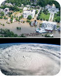

EcoOrbit DisasterLens
Connecting to NASA EONET…A disaster-monitoring dashboard for understanding floods, wildfires, storms, and other environmental hazards.
- Map reported or satellite-detected events.
- Display before-and-after imagery when available.
- Combine hazard information with population or infrastructure data.
- Produce a visual impact report for emergency planners.
Data: NASA EONET (live events), NASA GIBS / Worldview (imagery, fires, floods), NASA VIIRS Black Marble (night lights), NASA SEDAC GPW (population density).
Not an emergency service. This is an awareness tool. For official warnings and evacuation orders, follow your national disaster authority.
NASA layers
Dots show the latest reported position of each open event. Imagery layers are satellite products and may lag the event or be blank where no data exists for the chosen date.
Open events
EcoOrbit DisasterLens combines open NASA datasets. Event positions are as reported by source agencies through NASA EONET and can be delayed, approximate or revised.